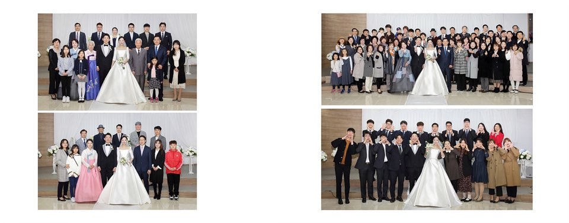

- 일기
- 식단
- 운동
나의 인생 전환점 8월 31일
2020년 8월 31일 새로운 전환점을 맞이하고 있다. 오늘부터 제대로 프로그래밍 공부를 시작한 것이다.
스페인어가 나의 삶을 송두리째 바꾼 것처럼 오늘부터 시작한 프로그래밍도 나의 삶에 정말 큰 변화를 가져올 것이라는 촉이 있다.
지금까지의 삶은 문과적인 삶이었다. 항상 언어를 중점적으로 공부했었고 컴퓨터, 수학과 같은 이과적인 세계에는 발을 들여놓지 않고 있었다.
하지만 나에게도 많은 변화가 있었고 작년에는 결혼을 했고 올해는 지온이가 태어났다.

2020년 하반기, 이제 고작 4달 밖에 남지 않은 상황에서 나는 마지막 바락으로 코딩을 배우려고 한다
추억보기